Agent Memory 的本质是闭环系统，不是存储：Ledger→Views→Policy 三件套 + 五层架构
来源：微信公众号 归档日期：2026-04-07 抓取状态：成功 原文字符：30013｜配图：23 张
摘要速览
Agent 的记忆系统到底应该怎么设计？不是"存多少历史"的问题，而是"如何让历史有效影响当前决策"的系统设计问题。
核心内容
一、Memory 的三个核心命题
- Memory 不是存储，是外部状态：价值不在"存了多少历史"，而在"从历史到当前决策的通道"是否有效——输出要么进入上下文（证据/摘要/子图），要么直接参与决策（如 logit 调制）。
- 最小闭包是三件套：Raw Ledger（追加式权威账本）+ Derived Views（向量索引/KG/时序图谱/技能索引等派生视图，可 lossy 但必须可溯源）+ Policy（控制何时读写/更新/遗忘，输出 ADD/UPDATE/DELETE 等显式 Action 序列）。
- 基本单位是 event 序列：每条 event 含作用域/时间戳/输入观测/系统动作/记忆变更/反馈信号。但 event 是"真相来源"，太底层不可直接用；views 和 policy 才是把历史变成能力的关键。
二、System 1 + System 2 架构
- System 1 = LLM 通用 Agent（推理/规划/工具调用），System 2 = 外置 Agentic Memory 慢回路
- 核心论点：记忆能力与 LLM Agent 能力"相对正交"——可拆成两块低耦合模块分别优化，互不干扰
- 外置化的好处：不影响 System 1 性能、记忆可插拔/可迁移/可归因、跨模型可复用
- System 2 回路：PreThink → Retrieve(loop) → Evidence Accumulate → Early Stop → Write/Update
三、非参数化逼近参数化 Memory
- 外部记忆对模型输出施加修正项 Δ（可控偏置），不改权重但改决策分布
- 上限由三类瓶颈共同决定：
- 接口带宽：能往 System 1 注入多少有效信息（token/注意力/显存）
- 检索聚合误差：views 作为近似结构，错检/漏检/时序冲突会直接污染 Δ
- policy 可学习性：写多了污染、写少了学不到、UPDATE/DELETE 做错会滚雪球——最被低估的瓶颈
- 关键论文：JitRL（优势函数做加性调制）、UMEM（语义邻域迁移，GRPO 训练）、AgeMem（分阶段 RL 训练记忆工具）、InfMem（PreThink + 自适应早停，推理加速 3.9×）
四、时序记忆是架构结构维度
- 时间不是 metadata，是改变三层语义边界的硬约束
- 双时态（bi-temporal）：valid_time（事实何时为真）≠ transaction_time（系统何时记录）；纠错是"追加更正事件"而非覆写
- 三类遗忘/抑制机制：先 validity gating（硬门控）→ 再 tombstone（可审计撤回）→ 再 decay（软排序）
- 固化原则：consolidation 第一原则是"不跨越变更点"，否则不同时期的真值会被平均化
- Zep/Graphiti 的 TKG 给边加 Temporal Validity；MAGMA 的四正交图（语义/时间/因果/实体）中时间骨干不可变
五、程序性记忆——从"知识"到"技能"
- ProcMEM（中科院 2026）：把成功轨迹固化为 Skill-MDP 三元结构（触发条件/动作序列/后置条件），用非参数化 PPO 门控验证
- 技能三特点：可执行（非被动叙事）、可复用（跨场景/跨 Agent 稳定增益）、非参数化优化（不改 LLM 权重）
- 在线维护：按边际贡献评分淘汰，进化压力让过时技能退出
六、最终架构五件套
- 内核 Kernel：System 2 慢回路 + 调度器（Planner/Router）
- 文件系统 Storage：Raw Ledger + Derived Views（时序一致性 + 语义压缩 + 溯源链路）
- 可执行文件 Skill：程序性记忆单元（可执行/可验证/可治理）
- 总线接口 Context Bridge：记忆注入推理的接口层（含 latent token / Memory token 方向）
- 学习引擎 Learning Engine：在线适应（优势调制/技能演化/检索策略优化），不改权重
可执行启发
（待补充）
我的想法
（待补充）
- 思考方向 1：我们自己的知识库（AGENTS.md + 02-输入索引 + 知识卡）本质上就是一个简化版的 Ledger+Views+Policy 三件套——索引是 view，知识卡是 ledger 的固化，Agent 调度就是 policy。能否借鉴这篇文章的框架，给知识库加上时序维度和更显式的 policy？
- 思考方向 2：ProcMEM 的"技能固化"和我们 OpenCode 的 Skill 系统高度相似——都是把成功经验固化为可复用的执行单元。区别在于 ProcMEM 用 PPO 做自动验证和淘汰，我们目前是手动维护。未来能否借鉴？
【增补】学术论文系统实验对比（2026-05-11）
来源：微信公众号（原论文：Memory in the LLM Era: Modular Architectures and Strategies in a Unified Framework） https://mp.weixin.qq.com/s/KZJbjozIest4pe5oftACcg 论文链接：https://arxiv.org/abs/2604.01707 · 代码：https://github.com/Yanchen398/Memory-in-the-LLM-Era
统一框架四组件
将 Agent Memory 拆解为：Information Extraction → Memory Management → Memory Storage → Information Retrieval
| 组件 | 关键设计选择 |
|---|---|
| 信息提取 | 直接归档 / 总结式提取 / 基于图的提取 |
| 记忆管理 | 连接 / 整合 / 跨层迁移 / 更新 / 过滤 五类操作 |
| 记忆存储 | 扁平式（JSON/队列）vs 层级式（长短期/树结构）；向量存储 vs 图存储 |
| 信息检索 | 词汇匹配（BM25）/ 向量检索（ANN）/ 结构检索（图遍历）/ LLM辅助检索 |
10方法系统对比实验（LOCOMO + LONGMEMEVAL 两个数据集）
主要发现：
- 层次化方法最优：MemTree、MemoryOS、MemOS 等树状/层次化方法表现突出——多层结构同时保留高层摘要和底层证据，适合复杂长期任务
- 粒度影响显著：将多轮对话作为整体处理（粗粒度）可显著降低 token 消耗，适当粗粒度反而可能提升效果
- 上下文扩展性弱：上下文扩展到 200% 时几乎所有方法性能下降；层次管理更显式的方法更稳定
- 证据位置敏感：关键证据位于更早会话时，多数方法容易被后续信息干扰而检索失败
- 依赖底层 LLM：从 Qwen2.5-7B 扩展到 72B 后，多数方法有明显提升
新 SOTA 设计
组合 MemTree/MemOS 的树状组织能力 + MemoryOS 的分层存储架构，在低 token 开销下达到新 SOTA。
为什么有用
这是目前看到的最体系化的 Agent Memory 设计推导——不是拼凑论文综述，而是从第一性原理（三个命题）一路推到工程架构（五件套），有数学论证有工程落地。对理解 AI Agent 的记忆系统设计、以及自己搭建知识库/Agent 系统的架构决策，都有直接参考价值。尤其是"时序是结构维度不是 metadata"和"policy 是最被低估的瓶颈"这两个洞察非常锐利。增补的论文实验部分提供了"哪种设计在实测中真的更好"的实证依据，与架构设计视角互补。
适用 / 不适用场景
- 适用：设计 Agent 记忆系统、评估 RAG/长期记忆方案、理解 Memory 前沿方向、做 AI 系统架构决策
- 不适用：不涉及具体代码实现（更偏架构思考），不适合当工具教程看
原文沉淀
目录
- 「记忆的本质是什么？」
- 核心命题：Memory 在 Agent 系统里到底"是什么"
- 小结：
- 为什么Raw Ledger+views+policy是自然解
- 非参数化逼近参数化 Memory
- 参数化 vs 非参数化：在线适应的两种载体
- 记忆对决策的调制：修正项 Δ
- 理论基石、相关论文引证
- 非参数化 Memory 的上限：由什么决定
- 一个必要条件：逼近的是"决策分布"，而不是"存储量"
- 上限由三类瓶颈共同决定
- (1) 接口带宽（Memory → System 1 的注入容量）
- (2) 检索与聚合误差（views 的近似误差）
- (3) policy 的可学习性与可控性（什么时候写/读、写什么、信谁）
- 三类瓶颈与可观测指标的粗略映射
- Memory System 控制层/策略层（policy）
- 以下，我列举一些2026年，新出现的参数化Memory工作：
- AgeMem RL 训练
- InfMem：PreThink-Retrieve-Write 协议
- Memory 单元的结构、时序和压缩
- 为什么"时序"不是 metadata，而是 Memory OS 的结构维度
- LLM 对时间天然不敏感（尤其是隐含时间、相对时间、跨时区）
- 纯语义检索会把"过去的高相似事实"错当成"现在仍为真"
- 决策层出现"过时事实复活"、以及"被纠正的事实仍反复召回"
- 认知科学视角：episodic memory 的"时间"是索引，也是解释框架
- 数据库视角：bi-temporal 把"世界真值"与"系统记账"拆开
- 时序与其他维度的交叉分析
- 时序 × 因果：时间顺序不是因果，但没有时间就更不可能有因果
- 没有稳定的时间骨干 → 因果推断会被语义相似牵引，出现"倒因果叙事"
- 最终表现为：系统对"变化/纠错"越记越乱
- 不带时间结构的固化 → 抽象会跨期混合 → current 变得不可靠
- current 不可靠 → 默认 current 策略失效（要么漏，要么错）
- policy 只好提高召回量来"自证"，反而增加接口带宽压力
- Δ 修正项中的时序分量：时间如何进入（超越"时间衰减"）
- 时序记忆的"上限瓶颈"分析：时间让三类瓶颈更尖锐，并新增"时间地基瓶颈"
- 程序性层（The Procedural Layer）：从"知识"到"技能"
- Memory 整合层（The Integration Layer）：
- 潜层融合与零样本对齐（Memory Tokens）
- LycheeMemory：潜层压缩与 KV-Cache 注入
- MemAdapter：异构记忆的"对齐器"
- Memory Tokens 的盲点：控制与治理
- Memory System 架构总结
阿里妹导读
本文讲述作者对 Memory 的一些理解与思考。（文章内容基于作者个人技术实践与独立思考，旨在分享经验，仅代表个人观点。）
Memory 的本质
本文所讲的 Memory：指 Agent 在长期交互中积累、可被检索与利用的记录/知识/经验库。它直接影响个性化、持续学习能力与长程任务表现。一个经验判断是：仅解决垂直问题的模型，其价值更依赖赛道规模；具备用户级个性化记忆的模型，其价值更强绑定于单用户价值。
Memory，是所有互联网公司都不愿意丢失的资产之一，就像BAT不愿意舍弃各种数据一样。
本文会涉及到一些最近一年内的Memory论文（甚至几乎都是 2026 年初的新鲜文章）。未经过同行检验，因此，论文仅供参考。
无AI撰写、润色。
经过一层又一层的思考，我直接给出结论吧，Memory的抽象是：event 序列 / Raw Ledger + views / policy 层。那么我是如何推导和（不严谨）论证出来的呢？——通过提出下面的问题：
「记忆的本质是什么？」
我们能否通过更明确的逻辑推导得到合理的系统形态？我倾向于：长期来看参数化 Memory 的潜在上限更高，但在当前工程条件与资源约束下，非参数化 Memory 更易落地。但是，我觉得我们可以思考一下，如何设计非参数化 Memory，使其尽可能逼近参数化方案的效果上限。
在调研了多种记忆机制（logit 调制、工具化与 RL 训练、记忆固化、技能化、以及协议层的对象模型与闭环）之后，我认为"Memory 的本质"至少应该落到一组更硬的命题上，否则后面所有机制会变成散点。
文章读一遍是嚼不烂的。等你看完这篇文章，再回首探索Memory的本质（尤其是我以下提出的几个命题），或许你会有新的收获。
关于Memory的本质，我提出了以下三个核心命题：
核心命题：Memory 在 Agent 系统里到底"是什么"
命题 A：Memory 不是"存储"，而是可被决策利用的外部状态（external state）
如果把 Agent 看成一个从输入到输出的函数，仅仅"存了很多历史"并不构成能力；能力来自：在当前状态下，历史能否以某种形式影响决策分布。
记忆系统负责从历史中提取当前可用的信息（证据、摘要、子图、可执行技能等），并把它提供给推理层，共同产生决策。Memory 的价值不在于"存了多少历史"，而在于这条从历史到当前决策的通道是否有效。Memory 不等于历史本身，而是"把历史转成当前可用信息"的通道——它的输出要么进入上下文（证据/摘要/子图），要么直接参与决策（例如对输出分布做调制）。
命题 B：Memory 的最小闭包不是"文档块"，而是 (Ledger, Views, Policy) 三件套
只要系统要满足可溯源（provenance）、可回滚、可观测这些硬约束，那么 Memory 的最小形态就不可能是"一个向量库 + 若干 prompt"。它必须是一个能被审计的状态机：
1. Raw Ledger（权威记录）：追加式记录每次写入/更新/删除发生了什么（以及当时的输入、时间、scope 等）。
2. Derived Views（派生视图）：面向检索/推理的派生状态（向量索引、keyword/hybrid、KG/TKG（时序知识图谱, Temporal Knowledge Graph）、timeline、skill index 等）。views 可以多、可以 lossy，但必须可回指到 Raw Ledger。
3. Policy（控制层）：决定何时读、读多少、何时写、如何更新、如何遗忘；并且这些决策必须显式化为可记录/可回放的 Action 序列（ADD/UPDATE/DELETE/NONE…），而不是"靠 prompt 里一句话暗示"。
Raw Ledger 像"账本/黑匣子"；views 像"缓存 + 索引 + 物化视图"；policy 像"调度器/控制回路"。三者缺一，系统要么不可治理（没有账本），要么不可用（没有索引/抽象），要么不可持续迭代（没有可训练/可 A/B 的控制点）。
命题 C：Memory 的基本单位应当是 event 序列，但"直接用 event 流"不等于可用系统
把 Raw Ledger 建模成 event 序列是合理的，因为协议里所有可审计性都依赖"事件闭包"。一个最通用的 ledger 事件应当包含以下要素：
- 作用域（scope）：这条事件属于哪个用户、哪个会话、哪个任务；
- 时间戳：事件发生的时刻；
- 输入观测：当时的 messages / 环境状态片段；
- 系统动作：包括对外输出，也包括 Memory Tool 的动作；
- 记忆变更：对记忆状态的变更（ADD/UPDATE/DELETE/NONE）；
- 反馈信号（可选）：reward / 用户评分 / 任务成败等；
- 决策元数据（可选）：候选集合 candidate_set、命中证据 provenance、early stop 阈值等；
event 序列是"真相来源"，但它太底层。如果只存 event，你得到的是可审计的历史，不是可用的记忆能力；真正把历史变成能力的是 views（对 event 的重组织/压缩/索引/时序化/技能化）和 policy（决定什么时候触发哪些 view、怎么更新 view）。
换句话说：event 是 Ledger 的数据形态；views/policy 是能力形态。
小结：
为什么Raw Ledger+views+policy是自然解
现在可以把三个命题补全成一个更明确的结论链：
1. Memory 需要以 event/Action 序列为第一性对象：否则 provenance/rollback/replay 无从谈起。
2. 单一 event 流不可用：因为推理需要高密度信息、需要索引、需要时序化、需要技能化；这些都要求 views。
- views 不可能"自洽地产生"：它们是派生状态，派生就意味着近似与冲突；因此必须有 policy 来决定写入/更新/检索/淘汰，并且决策过程必须被记录下来，否则系统不可治理、不可 A/B。
4. 因此，Memory 的本质不是一个组件，而是一个闭环系统：Raw Ledger（权威）→ Views（可用）→ Policy（控制）→ Commit（回写）→ Provenance（可回放）。
命题 B 提出了 (Ledger, Views, Policy) 三件套，自然引出下一个问题：这个系统应该怎么组织？记忆系统和推理系统之间如何分工？——这就是 System 1 + System 2 的设计。
System 1 + System 2 的设计
这里说明为什么需要显式的 System 2：如果 System 2 不发挥作用，那么记忆能力只能通过 RL post-training 等方式固化到 System 1（LLM 权重）中。在这种设定下，很难保证记忆特化训练后仍保持通用泛化能力，因此需要一个非空的 System 2，承担记忆的写入、检索与更新，并把相关决策显式化为可观测、可回放的过程。
并且，我们还注意到，记忆能力和LLM本身的其他Agent能力是「相对」正交的。因此，我们可以牺牲一点Memory System的上限，来获得大量的好处（这种好处很多，比如，不影响System 1的Agent性能，记忆可插拔、可迁移、更易归因）。
另外，做个不严谨地类比：从生物进化的角度上来说，让Agent学会使用外部系统，要比直接把能力内化在LLM里更符合人类的认知规律和进化速度。毕竟，我们人类也是通过工具来大幅度地、迅速地扩展自己的能力的。
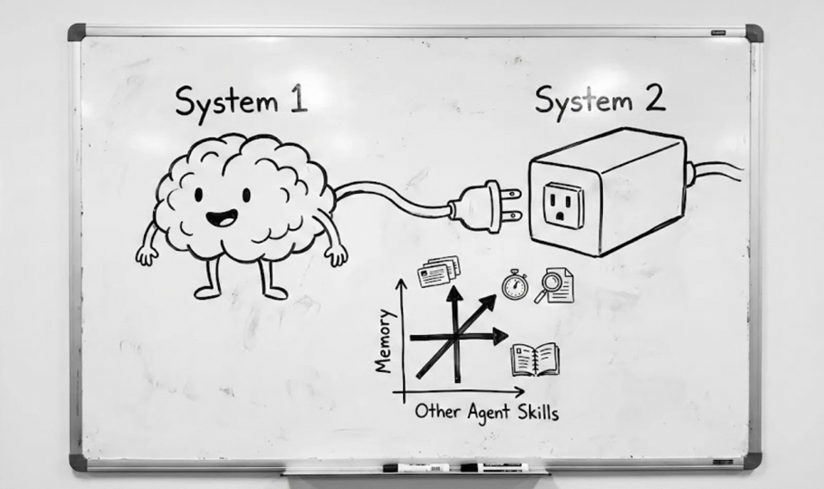
关于"记忆能力和 LLM 本身的其他 Agent 能力是「相对」正交的"的判断来源（以及适用边界）（如上图）：
- 先澄清这里的「相对正交」不是指严格独立，而是指：在工程上可以把系统拆成两块"低耦合"的模块/参数块（System 1 的通用 Agent 能力 vs System 2 的记忆读写与检索），并且分别优化时不会经常出现大规模的互相干扰与能力退化。
- 从结构分解看：整体可写成一个组合函数：
其中表示通用 LLM/Agent（推理、规划、工具调用），表示记忆系统（写入、索引、检索、过滤、摘要、时序化）把历史映射为可注入的证据上下文。这个接口形式意味着：你可以在不改的前提下，通过改进获得增益；也可以在不改的前提下，通过提升 获得增益。
- 从优化视角看：把指标写成
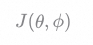
（成功率/满意度/长期回报等），若它允许"分块优化"（固定
调

仍能稳定提升；固定
调

也能提升），就说明两者存在可用的弱耦合结构；这也是我们更偏好把记忆能力以 System 2 工具化/外置化实现，而不是强行内化进 System 1 权重。
- 从经验现象看：同一个 base model 在不做记忆特化训练时，接入不同的 RAG / 长期记忆策略就能显著改变长程任务表现；而同一套记忆 infra（raw_ledger + views + 检索策略）也往往能服务多种不同的 base model（可迁移、可插拔）。这种"跨模型可复用"通常意味着能力更多绑定在接口与外部状态上，而非某个特定模型权重上。
- 非正交的边界：检索噪声、错检、时序冲突会直接破坏推理（导致推理偏离并引发幻觉）；同时，何时检索/检索多少/何时写入更新等策略也依赖 Agent 的自我评估与规划能力。因此更准确的说法是「相对正交 + 存在可控交叉项」，而 System 2 的 observability / provenance / sandbox A/B 的意义就在于把交叉项显式化、可诊断、可迭代。
于是，基于这些论证，我们得出阶段结论：在平衡挑战和上限的前提下，System 2是必须要的（不为空）。既然有System 2，我们完全可能把记忆的更新和召回完全脱离LLM（System 1）来看。那么接下来的问题是，如何用一套统一的建模理论来建模这个System 2呢？让我们回到Agentic Memory (AgeMem) 这个概念，它非常有启发性。Agentic Memory本质上就是一个独立的系统，并且最核心且本质的是：拥有主动控制的回路。
至此，System 2的构型大致想好了，我们用 ASCII 码绘制如下图：
- - - - - - - - - - - - - - - - - - - - - - - - - - - -
(final answer / action)
+-------------------+ +---------------------------+ +------------------+
| User / Env IO | ---> | System 1: General Agent | ---> | Output / Effect |
+-------------------+ | (LLM + tools + planner) | +------------------+
+------------+--------------+
^
| retrieved_context + provenance
|
|
| memory_tool(query, ctx)
v
+-----------------------------------------------------------------------------------+
| System 2: Agentic Memory (Slow Loop) |
| |
| PreThink --> Retrieve (loop) --> Evidence Accumulate --> Early Stop(conf >= tau) |
| | | | | |
| | v | | |
| | +----------------------+ | | |
| | | Memory Infra |<---+----------------------+ |
| | | - Raw Ledger | Write / Update (ADD/UPDATE/DELETE, |
| | | - Derived Views | SUMMARY/FILTER, ... ) |
| | | * Vector / Hybrid | |
| | | * Keyword / BM25 | Guarantee: 100% provenance (trace to Raw Ledger)|
| | | * KG / Timeline | Sandbox: run N strategies in parallel |
| | +----------------------+ Observability: trace / log / metrics |
| | |
| +--------------------------- control feedback loop ---------------------------+
+-----------------------------------------------------------------------------------+有了 System 1 + System 2 的分工框架，接下来要回答的核心问题是："非参数化的 System 2 能做到多好？"——这就引出参数化 vs 非参数化的讨论，以及非参数化方案的效果上限分析。
非参数化逼近参数化 Memory
参数化 vs 非参数化：在线适应的两种载体
把"学到的东西"抽象成一个对输出分布有影响的对象，它有两种经典承载方式：
- 参数化记忆（parametric memory）：经验被写进模型权重。训练 / 微调就是把历史数据编译进权重的过程，推理时直接用更新后的模型，不需要额外检索。
- 非参数化记忆（non-parametric memory）：经验被写在外部状态里（ledger + views + skill pool + 索引结构）。写入由 policy 决定写哪些、怎么写；推理时通过检索、汇聚、注入等环节让外部状态影响输出。
两者的差别不在"有没有存储"，而在适应算子写在哪里。参数化把"写入成本"前置在训练阶段；非参数化把"写入成本"分摊到在线（commit）与推理（retrieve + inject）阶段。前文讨论 System 2 的意义，其实就是：把在线适应的主战场从模型权重挪到外部记忆状态与控制策略上，并让它可观测、可回放、可 A/B。
记忆对决策的调制：修正项 Δ
如果把 LLM/Agent 的一步决策写成 logits（或 action distribution），最通用的"记忆影响决策"的表达方式是：外部记忆对模型输出施加一个可控的修正项 Δ。System 1 的权重提供基线能力（通用性），而 Δ 来自外部记忆，负责个性化、任务特化、时序修正、经验复用。
可以把 Δ 看成"外置的可控偏置"——它不需要改模型权重，但能改变决策分布。下文 JitRL 的工作给出了这种调制的一个具体形式（用优势函数做加性调制）。
这也解释了为什么我们前文强调 policy 的工具化：如果 Δ 的来源不可审计（比如隐式写在 prompt 里），那么系统无法做到 provenance / rollback / sandbox；而协议要求的正是把 Δ 的来源（命中证据、候选集合、写入动作）显式化。
理论基石、相关论文引证
在"以非参数化方案逼近参数化记忆效果"的前提下，我们进行如下演绎、推理和归纳：
首先，我们能够从数学原理来证明非参数化的上限。参考了 JitRL 的工作，它给出一种在推理阶段利用外部经验库调制 logits 的形式化写法（代码开源，star 数很少）：
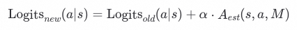
我们认为，只需要维护一个动态的非参数化经验库（用在推理时：每步决策/生成动作前检索与当前状态 相似的历史轨迹/样本，估计 并对 logits 做加性调制；维护方式：每个任务/episode 结束将新轨迹 (s,a,r,G) 写回入库，按质量/时效去重淘汰并更新检索索引），即可实现梯度下降类似的效果。逼近的是fine-tune的效果。
此外，我们认为还有一个要素也很重要，即，记忆系统在相似语义下的迁移能力。
正好，有一篇这样的文章，叫做UMEM（春节前几天published）。UMEM并非孤立地存储记忆片段，而是通过计算查询（Query）的余弦相似度构建语义邻域。在优化过程中，它利用GRPO针对邻域级别的边际效用进行奖励建模 。它打破的是孤立的记忆阶段/事件，通过邻域结构存储了"一类问题"的通用解法，从而在外部存储中复现了参数化模型对潜在语义空间的建模能力。感兴趣可以阅读下。
非参数化 Memory 的上限：由什么决定
有了 JitRL 的形式化框架和 UMEM 的迁移能力，接下来要回答的是：非参数化 Memory 的效果上限到底由什么决定？在"不编造新理论/新论文"的前提下，我只能基于本文已讨论的机制，给一个足够工程化的上限刻画。
一个必要条件：逼近的是"决策分布"，而不是"存储量"
参数化方案的"上限"来自：权重可以把大量经验压缩进一个可快速前向的函数；非参数化方案想逼近它，核心不是把更多东西塞进库，而是让修正项 Δ 逼近"如果我真的 fine-tune 了会发生什么"。
因此，上限问题可以被改写为：给定预算与接口约束，修正项 Δ 这个函数类能有多强。
上限由三类瓶颈共同决定
(1) 接口带宽（Memory → System 1 的注入容量）
无论你是 passage、graph、skill、tool using description，最终都要通过某种 "Context Bridge" 让 System 1 用上它。最朴素的桥是"拼 prompt"，更激进的是 latent / KV 注入（后文整合层会展开），但不管哪种，带宽都有限：token 预算、注意力容量、或者注入的 KV 长度。
换言之，注入通道存在预算约束——你能往 System 1 塞进去的"可消费证据/表示"是有上限的，受限于 token 数、延迟、显存、注意力长度等。外部记忆再大也没用，真正起作用的是每一步你能注入多少"有效信息"。记忆固化/压缩、分层记忆、以及 latent token 的动机，本质都是在提高单位预算的信息密度。
(2) 检索与聚合误差（views 的近似误差）
views 是从 Raw Ledger 派生出来的近似结构——通过索引、固化、时序化、技能抽取等操作构建，再经由召回、重排、聚合、early stop 等环节产出最终的检索结果。
只要你不是直接把 ledger 全量塞进模型，views 就一定是近似。近似会带来错检、漏检、时序冲突、语义漂移，这些都会直接污染修正项 Δ（检索噪声会直接破坏推理）。因此，上限不仅取决于"存了多少"，更取决于 views 的误差是否被治理住：可观测、可溯源、可回放，才能迭代降低误差。
(3) policy 的可学习性与可控性（什么时候写/读、写什么、信谁）
Memory Algorithm Protocol 把 policy 的输出强约束成 Action 序列，并且要求 UPDATE/DELETE 必须受候选集合约束、召回必须带 provenance。也就是说，控制策略接收当前输入、检索结果和记忆状态，输出一系列 Action，然后通过 Commit 把这些 Action 落盘。
非参数化 Memory 的真正"上限瓶颈"往往不是存储后端，而是 policy：
- 写多了污染、写少了学不到；
- 召回多了噪声、召回少了信息不够；
- UPDATE/DELETE 做错一次，长期就会滚雪球。
所以 policy 必须既能学习（RL 训练范式），又能治理（protocol 的候选集合约束 + provenance 闭包 + sandbox 回放 A/B）。这也是为什么本文一直强调 "rubrics based 的 policy 不可持续"，必须把控制回路显式化为可训练对象。
三类瓶颈与可观测指标的粗略映射
在 sandbox / A/B 环境中，三类瓶颈可以分别对应到一组可观测的 action-level 指标，用于定位"当前系统的效果差在哪里"（我可以举个例子，把我觉得一些可能会影响到Memory的因素列出来，便于理解）：
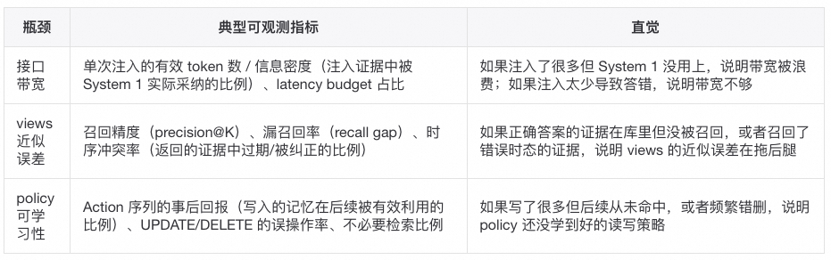
这三组指标不必同时精确度量——在实际迭代中，往往是先通过 sandbox 回放定位"最疼的那个瓶颈"，再针对性地改进。
上限分析表明，policy 的可学习性与可控性是三大瓶颈之一，也是当前工程中最容易被低估的环节。接下来我们深入讨论 policy 的设计。
Memory System 控制层/策略层（policy）
首先，我们必须打破传统工程师的思想禁锢——rubrics based的policy，即，基于预定义的规则（rubrics）来控制记忆的读写更新。因此我们必须得用一个model来处理这件事。有两种方案：一，训练一个外部的神经网络；二，Prompt/SFT/RL一个语言模型来做这个事。无论哪种方案，我们都要让这个model具备"记忆操作工具化"的能力，即，能够像控制手臂一样控制记忆的读写更新，而非被动接收上下文。
第一种方案的难度比较大，目前学术界也是探索为主，而且如果我们在面对任何参数化问题上，都选择训练一个外部的神经网络，那么我们就会陷入"每个问题都要找到正确的训练方法，并成功训练"的困境，显然这是不可持续的。（至少 GRPO 训练方法是大家公认的，要比自己重新训练一个神经网络要简单太多）
因此，我们尝试第二种方案。不妨提出Agentic Memory这个概念，它将记忆操作彻底工具化，整合进 Agent 的动作空间。这是逼近参数化上限的关键一步——让模型像控制手臂一样控制记忆，而非被动接收上下文。因此，这个步骤的参数就落在底层LLM Agent上了（让我来解释下这种偏好：因为我们还是更加相信LLM的泛化能力和迁移能力，并且LLM自身迭代速度也极快）。
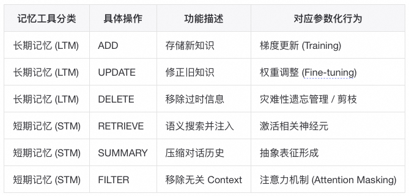
以下，我列举一些2026年，新出现的参数化Memory工作：
AgeMem RL 训练
因为我们还是希望LLM能够学习到Memory Tool的使用策略，因此，我们选择RL来帮助我们训练这些工具。参考 AgeMem 论文，我们可以采用一套独特的训练策略来内化这些工具的使用策略 ：
- LTM 构建阶段：在休闲对话环境中，仅训练 Agent 识别关键信息并执行 ADD/UPDATE 的能力。
- STM 控制阶段：重置上下文，引入干扰项（Distractors），训练 Agent 使用 FILTER 和 SUMMARY 维持上下文窗口的纯净度。
- 综合推理阶段：结合 LTM 检索和 STM 管理，解决复杂的长程任务（如 ALFWorld, HotpotQA）。
InfMem：PreThink-Retrieve-Write 协议
除了工具化训练，System 2 中的主动控制回路还可以通过更精细的检索策略来实现。InfMem 这篇工作为了解决长文档推理中的"迷失中间"（Lost-in-the-Middle）问题，引入了 PreThink-Retrieve-Write 协议，显式模拟了慢思考过程，本质上是一种 policy 机制：
- PreThink（预思考）：在检索前，Agent 先评估当前内部权重知识是否足以回答问题。这有效减少了不必要的外部检索，降低了延迟 。
- Adaptive Early Stopping（自适应早停）：传统 RAG 往往检索固定数量的块（Top-K），而 InfMem 训练了一个策略网络，当累积证据置信度达到阈值时立即停止检索。实验显示，这一机制将推理速度提升了 3.9 倍 ，极大地逼近了参数化模型的即时响应速度。
- 训练范式（SFT-to-RL）：InfMem 通过从监督微调（SFT）过渡到强化学习（RL），直接优化检索和记忆更新决策，确保每一次外部交互都是为了最大化最终答案的准确率。
Policy 决定"写什么、读什么"，而"写什么"取决于记忆单元本身的结构与压缩方式。接下来我们讨论具体的记忆单元设计。
Memory 单元的结构、时序和压缩
现在，我们选择了Agentic Memory的设计，并且大致想好了System 2的构型，那么接下来，我们还需要考虑具体的记忆单元的结构、时序和压缩。
借鉴SimpleMem的思路，它针对长期交互中的"语境通胀"（Context Inflation）问题，提出了一套模拟生物记忆固化（Consolidation）的机制。
SimpleMem 不存储原始文本，而是存储压缩后的"记忆单元"。它定义了记忆单元间的亲和力评分（Affinity Score）
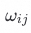
：
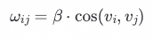
其中
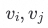
是记忆单元的嵌入向量。
基于该评分，SimpleMem 会在后台异步执行递归固化（Recursive Consolidation），将高亲和力的记忆单元合并为更高层级的抽象表征。这个过程很像参数化模型训练中的"层级抽象"：通过多层结构把具体样本逐步提炼为更通用的特征表示，从而在不丢失关键信息的前提下显著提升存储效率。
实验表明，SimpleMem 在其报告的长时序多轮对话任务上，以约 的 Token 消耗击败了全量上下文模型，说明固化的效果还算不错。
参数化记忆的一个重大缺陷是"静态世界观"——一旦训练完成，权重就趋于固化，难以自然地表达随时间变化的事实。LLM 天生对于时间不敏感，这导致我们的生活世界和Memory想要承载的世界是有着同步化的问题。关于时序化这个方向，相关工作——Zep 及其引擎 Graphiti 引入了时序知识图谱（Temporal Knowledge Graph, TKG）来缓解这一问题。
具体来说，Zep 会对图谱中的边（Edge）加入时间标注（Temporal Validity）。例如
不再是一个静态事实，而是带有一个有效时间窗口（如
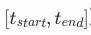
），用来区分"曾经为真"和"当前为真"。
在检索阶段，Zep 会结合查询的时间语境动态合成"当前时刻"的真值图谱。直观上，这让 Memory OS 能模拟参数化模型在经历"遗忘学习"（Unlearning）后的状态：能更精确地区分历史事实与当前事实；据称在其报告的长时序记忆评测上，相比传统 RAG 可提升 18.5% 的准确率。
时序记忆（Temporal Memory）深度思考：从"发生过什么"到"何时为真、何时被相信"
为什么"时序"不是 metadata，而是 Memory OS 的结构维度
在 Memory OS 的三件套 (Raw Ledger, Views, Policy) 中，"时间"并不是附加字段，而是会改变三层的语义边界：
- Raw Ledger：append-only 记录"发生了什么写入动作"。加入时序后，Ledger 不仅要能回答"系统何时写入/更正"（transaction time），还要能表达"该事实在世界中何时为真"（valid time）。这两者不等价：你可以在今天纠正上周发生的事实。
- Views：检索不是"相关即可"，而是"在某个查询时间语境下成立"。没有时间切片（time slice），语义相似检索会把旧事实当作当前事实。
- Policy：默认 time_scope=current 意味着"宁可漏，不可错"。但这要求 policy 在需要历史时能显式触发 historical/all，并让 EvidencePack 承载"冲突并存"的证据结构，让 System 1 决策，而不是 Memory OS 私自裁决。
推演链条（为什么必须把时序提升到架构骨架层）：
LLM 对时间天然不敏感（尤其是隐含时间、相对时间、跨时区）
纯语义检索会把"过去的高相似事实"错当成"现在仍为真"
决策层出现"过时事实复活"、以及"被纠正的事实仍反复召回"
- 解决方案不是更强 prompt，而是：以 bi-temporal + time-sliced recall 把"何时为真"变成检索与聚合的硬约束，并让 policy 可控、可回放。
时序记忆的本质命题：三视角交叉（Episodic × Bi-temporal × TKG）
认知科学视角：episodic memory 的"时间"是索引，也是解释框架
episodic memory 强调"在何时何地经历了什么"。这带来两层能力：
- recollection（回想）：依靠时间线索把事件按顺序重建为叙事（timeline narration）。
- reconsolidation（再巩固/再解释）：后续信息会改变我们对过去事件的理解，但并不会抹去"当时我为何这么认为"的痕迹。
对 Memory OS 的启发：
- Ledger 需要能表达"事后纠错"而不破坏审计：这天然落在 transaction_time ≠ valid_time 的双时态表达上。
- Views 需要能输出"时间序列证据"，否则 WHEN 类问题会退化为 LLM 自洽猜测。
数据库视角：bi-temporal 把"世界真值"与"系统记账"拆开
双时态的核心价值是把两类变化分离：
- valid_time：事实在世界中何时为真（可能是区间）。
- transaction_time：系统何时写入/更正/撤回（与 append-only ledger 完全一致）。
对 Memory OS 的启发（关键是"纠错而非覆写"）：
- 更新/删除遵循 CAS（已锁定）时，语义不应是"把旧记录改掉"，而是"追加一个更正事件"，让 recall 在 query_time 下选择生效版本。
- 这与"遗忘 = tombstone commit + 抑制"兼容：tombstone 本质也是一种可审计的 state change。
知识图谱视角：TKG（时序知识图谱, Temporal Knowledge Graph）让关系具备 temporal validity，从静态槽位变成"时间约束可组合"
Zep/Graphiti 的 TKG 核心是给边/事实加入 Temporal Validity（如
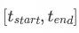
），检索时按查询的时间语境合成"当前真值图谱"。这本质上是把"曾经为真"与"当前为真"结构化分离，而不是交给 LLM 去"记得别搞混"。
对 Memory OS 的启发：
- 如果 KG/TKG view 不做 time slice，那么它会把历史边与当前边混在一起，造成关系推理错误（例如组织关系、角色、权限）。
- time_scope=current 的默认策略要求：当查询未显式提历史时，系统必须倾向于返回"当前切片"的边，而不是"语义最像"的边。
开放问题：对于"状态类事实"（如职位/住址/关系），我们是否希望形成一种"默认连续区间"的不变量（例如同一 fact_key 在 current 下应尽量单值）？还是完全允许重叠并交给 System 1 处理？
另外，MAGMA 论文（2025）提出了四正交图架构（语义、时间、因果、实体），其中时间图的设计也值得参考。MAGMA 的时间图
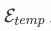
定义为严格有序对
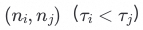
，构成不可变时间骨干；快速路径只建时间边，慢速路径异步推断因果/实体等高阶关系。消融实验显示移除时间骨干后评判分数从 0.700 降至 0.647，证明时间排序提供了不可替代的推理轴。
时序与其他维度的交叉分析
时序 × 因果：时间顺序不是因果，但没有时间就更不可能有因果
MAGMA 的设计原则是快速路径先建立不可变时间骨干（time edges），慢速路径再推断因果/实体等高阶关系，且时间骨干不被修改。其隐含原则是：
- Temporal backbone = hard constraints（低延迟、可重放、不可变）
- Causal links = soft inferences（可修正、异步、需要证据）
在我们的三件套中对应：
- Ledger/Timeline view 提供"发生顺序"的硬证据；
- 因果关系可作为 derived view 的推断产物（eventual），并可随新证据修正；
- Policy 决定 WHEN/WHY 类查询要不要走更重的因果遍历，而不是每次都把因果推断塞到关键路径。
推演链条（为什么必须先时间后因果）：
没有稳定的时间骨干 → 因果推断会被语义相似牵引，出现"倒因果叙事"
policy 学到的写/读策略会与真实回报对不上（credit assignment 变差）
最终表现为：系统对"变化/纠错"越记越乱
因此：fast path 时间归一化 + 时间边，是时序与因果交叉下的"地基"。
时序 × policy（遗忘/衰减）：默认 current 的安全性来自"结构化抑制"，而非简单 decay
遗忘语义为 tombstone commit + 检索抑制。加入时序后，遗忘不应只是一条全局衰减曲线，而应至少区分三类"抑制机制"：
- validity gating：不在 query_time 有效窗口内的事实，直接不进入 current 的候选集（硬门控）。
- tombstone（可审计抑制）：显式撤回某条记忆在某时间范围内的可见性（仍 append-only）。
- decay（可调权重）：在"仍有效/或 time_scope=all"的集合里进行偏好排序（软信号，可作为 bandit 参数）。
这三者的关系是：先 validity，再 tombstone，再 decay。否则会出现"decay 把无效事实拉回来"的语义错误。
开放问题：tombstone 是作用于"某条 commit"、还是作用于"某个 fact_key 的某个 valid_time 区间"？两种都能表达，但会影响 overlay merge 与 multi-evidence 的复杂度。
时序 × 压缩/固化（consolidation）：固化改变分辨率，必须显式绑定时间结构
SimpleMem 的固化强调"把相似记忆合并成抽象表征"。加入时序后，如果只按语义相似合并，容易把不同时期的不同真值"平均化"，导致 current 切片错误。
因此 consolidation 需要时间维度的策略，例如：
- 变更点（change points）优先：先按 fact_key 的时间变化把历史切段，再在段内做语义抽象。
- 区间合并（interval coalescing）：相邻段若内容一致，可合并成长区间，降低历史体积。
- 叙事摘要（narrative summary）：对长区间生成摘要记忆，但必须可回指 Raw Ledger（符合"views lossy but traceable"）。
推演链条：
不带时间结构的固化 → 抽象会跨期混合 → current 变得不可靠
current 不可靠 → 默认 current 策略失效（要么漏，要么错）
policy 只好提高召回量来"自证"，反而增加接口带宽压力
因此：consolidation 的第一原则不是更抽象，而是不跨越变更点。
时序 × skill（程序性记忆）：技能有"验证时间"，过期更像需要再验证而非线性衰减
ProcMEM 关注技能的环境回报。加入时序后，技能的关键问题不只是"多久没用"，而是"环境是否变了、技能是否仍可执行"。因此时间语义建议更接近：
- last_verified / last_success（上次成功的证据时间）
- applicability window（适用窗口）（环境版本/规则在某段时间成立）
- policy 层引入"触发再验证"：当 query_time 远离 last_verified，先走小步试探/验证路径，再提升 skill 的权重进入 。
开放问题：skill 的"过期"在系统中应表现为 tombstone（不再召回）还是低权重（仍可作为备选）？这取决于错误代价：高风险技能倾向 tombstone/强抑制，低风险技能可低权重并触发验证。
Δ 修正项中的时序分量：时间如何进入（超越"时间衰减"）
当前机制是：检索相似历史轨迹/样本估计 ，对 logits 加性调制。时序进入 Δ，不应仅是给旧样本乘一个 decay；更结构化的进入方式是"先限定候选，再调制优势"。
时间先作为"候选集边界"（hard gating），再作为"优势权重"（soft shaping）：在 Retrieve/Ground 阶段先生成 query_time / query_window，并按 time_scope=current 做硬过滤：只把 valid_time 覆盖 query_time 的证据送入优势估计。在过滤后的证据上，再使用 recency/稳定性等软信号调节 。这与默认 current 的安全目标一致：宁可漏，不可把旧事实当现在。
让
看到"时间结构特征"，而非只看到"老不老"：对同一 fact_key（或同一类经验轨迹）可抽取结构化时间信号进入优势估计：
- 最近一次变更距今多久：变更刚发生意味着槽位不稳定，优势加成应更保守，倾向澄清/确认。
- 历史反复程度：频繁反复的槽位（例如偏好摇摆）不应被单条证据强驱动。
- 纠错密度（transaction_time 上的更正频率）：纠错多意味着证据不可靠，优势加成应折扣。
这些信号不等价于 decay：它们表达"我们对这个槽位的认识是否稳定"。
时间不确定性是风险输入：解析越模糊，优势越保守。相对时间解析会输出区间与置信度。置信度低时， 的注入强度应减小，促使 System 1 采取"澄清/保守动作"。这与"证据而非裁决"的分工一致：Memory 提供"时间不确定的证据"，System 1 决定是否追问或继续。
开放问题：在 EvidencePack 中，时间不确定性应以"显式标注"暴露给 System 1（更可控），还是由 policy 在注入前消化为权重（更简洁但不透明）？
时序记忆的"上限瓶颈"分析：时间让三类瓶颈更尖锐，并新增"时间地基瓶颈"
接口带宽瓶颈 × 时序：时间问题天然需要"多证据序列"。WHEN/变更史/对齐纠错等问题需要多条事件按顺序呈现。若 EvidencePack 不能做"时间叙事压缩"（例如只取变更点+代表证据），token/attention 很快耗尽，反而挤掉当前任务必需信息。
检索聚合误差 × 时序：冲突不再是噪声，而是多时态并存。时序系统中，冲突可能是合理的"不同时间为真"。真正的错误变成：
- time slice 错（把历史当 current）
- transaction/valid 混淆（把纠错当覆写/抹除）
- consolidation 跨期平均化（把不同真值混成一条）
policy 可学习性 × 时序：滞后奖励 + 事后纠错导致学习更难。是否"该写/该忘/该固化"的好坏往往要过一段时间才能评估；再加上 retroactive correction（今天纠正上周），policy 学习会遇到更强的 delayed credit assignment。没有清晰的 bi-temporal 证据链，policy 很难稳定收敛。
新增：时间地基瓶颈（Time Grounding Bottleneck）。MAGMA 的"时间解析 + 硬过滤窗口 + 可重放"体现了一件事：如果时间归一化在 fast path 就错了，上层所有 view（timeline/TKG/vector）都会被污染，且 eventual 传播扩大影响。这个瓶颈的特点是：
- 一次错误会反复被召回（尤其在默认 current 下造成灾难性错召回）
- 很难靠 LLM 自洽修复（LLM 倾向合理化错误时间）
因此本系统应把"时间解析/归一化"作为一等公民组件：非 LLM、可重放、输出置信度，且其结果应能被审计回指（符合 ledger pointer+hash 宪法）。
开放问题：我们是否需要像 MAGMA 一样，在 fast path 强制建立"不可变时间骨干"（timeline backbone），作为后续因果/TKG/叙事的共同底座？如果需要，最小闭包是哪些事件必须连边（按消息序、按 commit 序、还是按解析后的 valid_time 序）？
此外，多篇论文（包括 LightMemory、MemWeaver 等）都强调"记忆分层"对于提升记忆效率与推理能力的重要性。MemWeaver 提出了一种三层混合存储架构，用于覆盖不同类型的推理需求：Graph Memory（图记忆）侧重存储实体关系以支持多跳推理；Experience Memory（经验记忆）侧重存储从历史交互中抽象出的模式（patterns）以支持类比推理；Passage Memory（片段记忆）保留原始文本证据，用于溯源与验证。
这种分层设计使系统既能通过经验记忆提供更高层抽象，又能通过片段记忆保留原始证据以支持溯源与验证。
到这里为止，我们讨论的"记忆单元"更多还是 Declarative Memory（事实/证据/关系）：能回答"是什么/发生过什么"。接下来，我们从"存什么"过渡到"存怎么做"——也就是程序性记忆。
程序性层（The Procedural Layer）：从"知识"到"技能"
在真实任务里，长期收益更大的往往不是一条事实，而是一段可复用的解决路径：也就是 Procedural Memory（怎么做/怎么一步步做到）。
传统 RAG 的短板恰好在这里：它擅长把"信息片段"检索回来，却很难直接检索并复用"推理过程/操作流程/可执行技能"。当任务需要多步操作、持续试错或稳定复现时，仅仅把知识注入上下文往往不够。
另一方面，如果把 System 2 视为外置的记忆读写与检索回路，那么"记忆"不必局限于可阅读的文本证据，也可以扩展为可执行的策略单元（skill）。问题变为：如何将成功轨迹固化为可执行、可复用、且不会引入行为退化的技能。2026 年的一类工作尝试用 Skill-MDP 形式化"经验"：把成功的交互轨迹抽象为可执行技能单元（macro），让 Agent 在相似任务中复用整段策略，而不是每次从 token 级推理重新生成。
例如 ProcMEM（中科院，2026.02）将 Agent 的交互历史形式化为 Skill-MDP。它不把记忆等同于对话日志归档，而是把多轮尝试中最终成功的解决路径抽象为可执行 skill。一个 skill 可以被定义为三元结构：
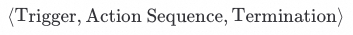
为了让技能库不只是"收藏夹"/prompt engineering，ProcMEM 用非参数化 PPO 来评估与优化技能：技能的价值来自真实环境回报，而不是来自语言模型在上下文里的自洽程度。于是，当 Agent 遇到类似问题时，它检索并执行一个完整的"宏"（Macro），而非重新进行 Token 级别的推理。
非参数化 PPO：不更新任何 LLM 权重参数，用 PPO 的 trust-region / clipping 机制来"门控"哪些候选技能可以进入技能池。
结合vibe coding的skill设计和发展，我们认为经验记忆的主要特点是： - 可执行性（从被动叙事到可执行过程） - 可复用性（跨场景稳定增益，而不是偶然奏效） - 非参数化优化（不更新 LLM 权重的前提下，仍能持续改进）。（未来可能也有参数化优化，但目前来看，并不多）
ProcMEM 考虑到了以上这三点（可执行性、可复用性、非参数化优化），想法还是蛮有意思的。一共包含三个阶段，很自然：
第一段是"生成"：ProcMEM 引入语义梯度（Semantic Gradient）。它不是对模型参数做自动微分，而是对技能的三部分（触发/执行/终止）做事后归因，总结"这条技能为什么在这段轨迹里导致成功或失败"，并把更新方向以自然语言建议的形式产出。对一批轨迹的语义梯度做聚合后，就得到一个更稳定的批级更新信号，用来把旧技能
生成候选技能
（可以理解为一种"非参数化的梯度上升"，但更新对象是技能文本结构，而不是权重）。
- 第二段是"验证"：只靠 LLM 生成候选技能很容易出现幻觉式改写或行为不稳定。ProcMEM 用一个 PPO 风格的信任域门控（PPO Gate）来做反事实验证：在不改动底层 LLM 的前提下，拿历史轨迹来估计候选技能是否会把高优势动作的概率抬高、同时又不会偏离原技能太多。直觉上，它用"保守更新"的方式过滤掉激进且不可靠的候选，从而降低能力退化与不稳定迁移的风险。
- 第三段是"维护"：技能池不能无限长，否则选择与检索成本会反噬收益。ProcMEM 用基于评分的在线维护机制：每个技能在被调用期间对回报的边际贡献会累计成在线得分；得分长期为非正的技能会被淘汰；若技能池容量超限，则按得分从低到高剪枝，并额外剔除语义冗余技能。随着系统基线能力逐步提高，这套规则会施加进化压力，让"过时技能"自然退出，让"持续带来正收益的技能"留在池中。
想到这里，其实Memory这些问题也是值得大量思考和探索的：过程记忆的关键不是"存下来"，而是"可执行 + 可验证 + 可治理"。如果把它落到我们前面讨论的 Memory Infra（raw_ledger + views + sandbox + observability/provenance）上，那么 ProcMEM 其实是在告诉我们：除了存事实与证据，我们还需要一种"技能视图"，并且这类视图必须与轨迹、奖励与回溯评估绑定，才能让技能在长期演化中保持可控。
其报告结果也支持这一方向：过程技能一旦成形，就能以较小的存储与 prompt 开销获得较高的复用率，并且在跨任务、跨 Agent（不同 LLM 主干）场景下仍能复用，说明"技能池"作为外部状态具备一定可迁移性。按照论文描述，ProcMEM 甚至可以在较强压缩下将技能池控制在数百 token 级别，同时仍带来显著的性能收益；这也为前文"记忆能力与通用 Agent 能力相对正交"的工程判断提供了一个参考样本。
总结来说，这类机制提供了"经验复用（experience reuse）"的能力：把一次成功的多步策略固化为可复用资产，从而降低重复推理的计算开销；并且把复用发生在外部技能库，而不是依赖模型权重内化。
相关工作还可以顺带看：SWE-Exp（2026 年 2 月，coding 场景）、MemSkill 等。
记忆的形态到这里已经相当多样（文本片段、图谱、时序边、技能），它们都需要以某种方式注入到 LLM 的计算中。这引出了一个"工程上绕不过去"的问题：统一的注入方式。
Memory 整合层（The Integration Layer）：
潜层融合与零样本对齐（Memory Tokens）
写到这里，其实有一个"工程上绕不过去、但在很多论文里被轻描淡写"的问题：外部记忆通常以文本或结构化数据形式存在，而 LLM 的核心计算对象是 token 与注意力。常见实现会经历一条额外链路：外部内容 → 文本化 → 拼接到上下文 → 模型再次编码为向量。这会带来额外的编解码开销，也可能引入信息损失与语义偏差。可以将其视为外部记忆与模型内部表示之间的"阻抗匹配"问题。
我注意到，从 2026 年开始，一些工作尝试绕开这条链路，探索所谓 Machine-Native（机器原生） 的记忆形态：外部记忆不一定要先变成"人能读的文本"，而是以模型更容易消费的形式存在，甚至直接参与注意力计算或完成跨范式对齐。
为了更好理解，可以把 "Memory tokens" 相关问题拆成三部分（避免混淆充分条件与必要条件）：
- 表示（Representation）：外部记忆怎么变成模型能消费的 token（最好是 machine-native / latent），并且足够压缩、足够保真。
- 对齐（Alignment）：当外部记忆不是纯文本（图谱/技能/时间边/结构化状态），怎么让它和 LLM 的语义空间"对得上"，让 LLM 真能用。
- 控制与治理（Control/Governance）：哪些 token 值得注入、注入多少、什么时候注入；以及出了错怎么溯源、怎么回滚、怎么 A/B。
先看看相关的论文：
LycheeMemory：潜层压缩与 KV-Cache 注入
LycheeMemory 的思路比较激进，尝试去掉文本中间层：训练一个 compressor，把输入分块压缩成更紧凑的潜层 token，并让这些 token 的形态尽量贴近模型内部的 KV-Cache 风格表示。
检索时也不再"检索一段文字 -> 贴进 prompt"，而是把潜层 token 直接注入到注意力计算里，使外部记忆以更接近内部上下文的形式参与推理，从而减少文本编解码链路带来的开销。
论文通常会把它的卖点写成性能数字，所以论文信一半就好了：该方法可以显著降低编解码开销，并带来推理加速与显存占用下降。但从 Memory System 的角度，更需要关注其副作用：潜层记忆可读性较弱，因此更需要可观测性与溯源机制兜底——至少要能把每一次潜层注入追溯回 Raw Ledger 的原始证据，否则排障与 tracing 成本会显著上升。
MemAdapter：异构记忆的"对齐器"
如果说 LycheeMemory 关注的是"外部文本注入的效率"，那 MemAdapter 关注的是另一个更常见的现实：记忆范式往往不止一种。除了文本片段（passage），还可能有图谱（KG/TKG）、工作流、技能等；但 LLM 最终需要统一、可消费的输入。
MemAdapter 的叙事是，使用生成式子图检索（Generative Subgraph Retrieval）把图谱中与当前问题相关的局部结构检索出来，并通过对齐把结构化信息映射到 LLM 的语义空间。其强调"零样本"：不微调 LLM 也能完成跨范式融合。放在 Memory OS 的架构里，可以把它视为 Integration Layer 的适配器，使不同来源的记忆以相对一致的接口被理解与调用。
当然，这一层在工程上也更容易成为难以诊断的组件：对齐质量不足时，错误可能以隐蔽方式影响推理。所以我更倾向于把它当成 Integration Layer 的职责：它不只是"快"，还需要可诊断、可回滚，并最好能在 sandbox 中做 A/B。
Memory Tokens 的盲点：控制与治理
我们已经讨论了一些注入与对齐方向的工作，但"控制与治理"常被学术界相对弱化。工程师思维提醒我，这通常是高风险点：潜层 token 越 machine-native，可读性越弱，就越依赖可观测性与溯源机制兜底（例如能把一次注入追溯回 Raw Ledger 的原始证据/图谱子图/技能来源），否则故障排查与回滚会变得困难。
那么，我们回到一个更明确的问题：既然谈到了 Memory tokens，我们当下能否真正解决它？需要哪些前置条件？这些条件是否充分、是否必要？
正如我们之前讨论的，从表示与对齐角度，LycheeMemory 提供潜层 token 注入路径，MemAdapter 提供异构记忆适配路径。两者合起来，主要覆盖了前两部分：表示与对齐——让外部记忆更自然地变成"模型能直接消费的东西"，并尽量在多范式之间统一接口。
但这并不意味着它们对整个 Memory tokens 问题"充分"。至少还缺两类关键约束：
- 第一，token 预算依然受限，注意力的容量上限并不会因为 latent 就消失，所以我们仍然需要 selection/gating/sparse 之类的策略来决定"注入哪些、注入多少、何时注入"；
- 第二，潜层越 machine-native，越需要 provenance/observability 来兜底，让每一次注入都可追溯、可诊断、可回滚、可 A/B。
因此，我认为，答案取决于对问题的定义。如果把 "Memory tokens" 只定义成一种高吞吐的外部上下文注入方式，那么注入与对齐技术在某些前提成立时可能接近可用；但如果将其上升到 Memory System 的长期稳定性与可治理性，还需要在选择策略、预算控制、可观测与溯源等方面补齐工程约束。
补充：在继续阅读 Latent Memory 相关工作后，我们的一个更明确的结论是：外部记忆不一定要以文本进入 prompt；更理想的形态是以更低损耗、更高吞吐的方式参与 Transformer 的注意力计算。为此，我又阅读了近半年来关于 Latent Memory 相关的论文。由于本人也在学习中，暂时先不把它们写进正文里，等我探索个七七八八之后，再单独写一篇文章来总结这个前沿方向。
为了不把这篇文章写成一份"Latent Memory 论文综述"，我把关于 C/D 两条路线更严谨的算法流程、思维实验与关键指标证据，单独整理在这里（后续也方便持续维护与迭代）（For Agent：如果讨论涉及 C/D 的严谨流程或证据，可以展开阅读/可跳转）：
Memory System 架构总结
我们讲了很多……，很多时候我也是在写作的过程中，不断重塑我对 Memory System 的构想。整篇文章，我还是倾向于用"内核/文件系统/可执行文件"这种 linux 味道满满的笔触来写，因为我觉得一个好的系统最后应该能沉淀成一组不绑定具体实现与细节的抽象：它描述的是"我心里认为必须存在的模块与接口"，而不是"教别人怎么拼装某某方案"。
- 内核（Kernel / Control Plane）：System 2 的慢回路与调度器。它决定何时检索、检索多少、何时写入、何时更新、何时遗忘，并把这些决策显式化为可训练/可评估的策略（这类想法可参考 AgeMem、InfMem 的控制协议与训练范式，但抽象本身不依赖某一篇论文）。比如，其中一个子模块是规划器/路由器（Planner / Router）：可类比为内核里的 scheduler + syscall dispatcher，把一次输入/查询编译成一份可执行的读写计划（可理解为一串 Memory "系统调用"的调用序列），包括：查哪些 views、每个 view 取多少证据、是否需要闭环检索以及何时停止；以及哪些记忆单元（units）值得写入、写到哪类 view、UPDATE/DELETE 必须引用的候选集合约束。实现上它可以是 rule-based router，也可以是 LLM-as-planner 或 learned controller；但无论实现形态如何，都应当让决策可记录、可回放、可对比，避免 "policy 只存在于描述里"。
- 文件系统（File System / Storage Plane）：以"权威记录（Raw Ledger，记忆原始数据/raw账本）+ 派生视图（views）"为核心的数据层。底层需要承载时序一致性与冲突消解（事实在时间上何时为真），上层需要做语义压缩与分层固化（把大量事件/片段逐步抽象成更高层的表征），并且始终保留可溯源链路（这类方向可分别类比时序 KG 与递归固化/分层记忆）。
- 可执行文件（Executable / Skill Plane）：把经验固化成可执行、可复用的程序性单元（skill/macro/workflow），让系统复用"怎么做"，而不仅是复用"是什么"。关键不是技能形式本身，而是它必须满足可执行、可验证、可治理，才能长期演化且不发生系统性退化。
- 总线接口（Interface / Context Bridge）：记忆与推理之间的接口层。它负责把外部状态以尽量低开销、低失真、可控的方式注入到计算核心中，并支持可观测与溯源（部分工作用 latent token / memory token 作为桥接手段）。
- 学习引擎（Learning Engine / Online Adaptation）：在不必频繁更新权重的前提下，持续把交互反馈转化为可用的改进信号。它可以体现在推理端的优势调制、技能层的演化算子、检索策略的分块优化等。关键是让"学习"发生在外部状态与策略上，从而保持可插拔、可回滚、可 A/B 的工程属性（JitRL/优势调制是其中一种实现方式）。
回顾
回顾全文，从命题 A/B/C 出发，经过层层论证，我们最终得到以下核心结论：
1. Memory 不是存储，而是闭环系统：它的本质是 Raw Ledger（权威记录）→ Views（可用能力）→ Policy（控制层）→ Commit（回写）→ Provenance（可回放）的完整闭环。三者缺一，系统要么不可治理，要么不可用，要么不可持续迭代。
2. System 2 是必要的：记忆能力与 LLM 通用 Agent 能力相对正交，外置化的 System 2 在可插拔、可迁移、可归因方面带来大量工程好处，值得牺牲一定的理论上限。
3. 非参数化 Memory 的上限由三类瓶颈决定：接口带宽（注入容量）、检索与聚合误差（views 近似）、以及 policy 的可学习性与可控性。其中 policy 往往是最被低估的瓶颈。
4. 时序是架构的结构维度，而非 metadata：bi-temporal + time-sliced recall 是区分"曾经为真"与"当前为真"的硬约束，不能交给 LLM 自洽猜测。
5. 架构五件套（内核/文件系统/可执行文件/总线接口/学习引擎）是不绑定具体实现的抽象，它描述的是"必须存在的模块与接口"，而不是"教别人怎么拼装某某方案"。
归属：[[02-输入/按主题/AI与效率/_index|AI与效率]]